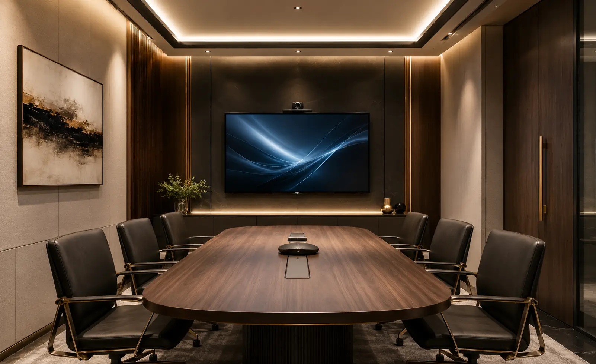
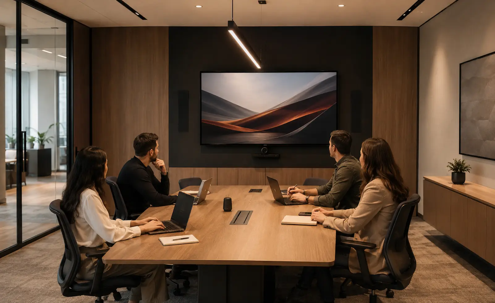
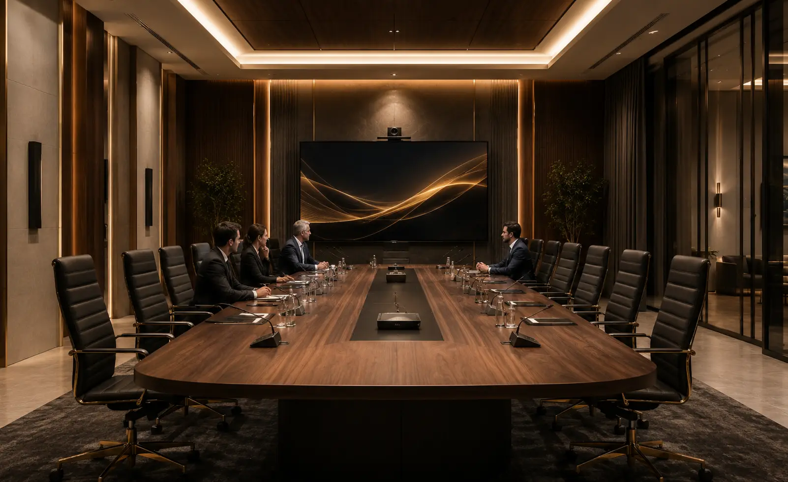
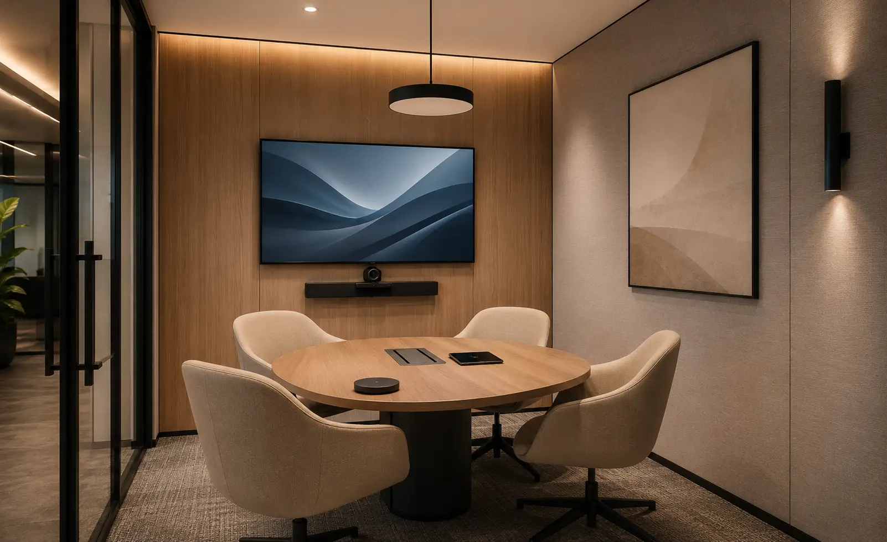
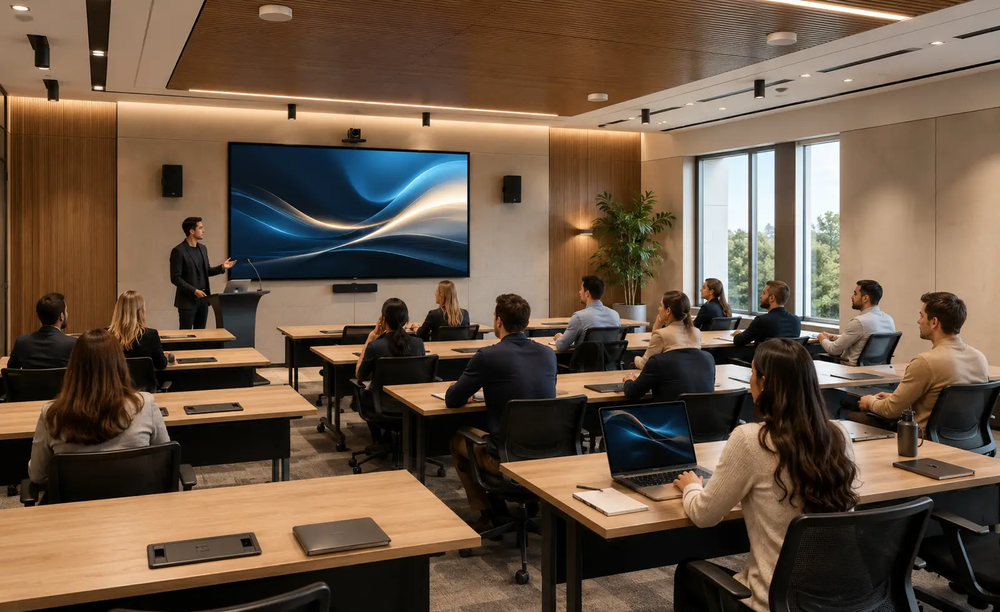

Audio y video para salas de juntas: colaboración, voz e imagen.
Diseñamos e integramos salas de juntas para reuniones presenciales,
híbridas y remotas.
Consideramos dimensiones, número de participantes, distribución
de asientos, ruido, reverberación, distancia de visualización, plataformas, cámaras, microfonía,
altavoces, conectividad, red, cableado y control antes de seleccionar equipos.
Una sala de juntas debe facilitar decisiones, no generar problemas técnicos
La sala de juntas concentra presentaciones, decisiones, reuniones con clientes y colaboración entre equipos presenciales y remotos. Por eso audio, imagen, captura de voz y conectividad deben diseñarse como un solo sistema.
En DG Audiosound analizamos geometría de la sala, participantes, plataformas, acústica, visualización y operación para definir una integración adecuada al uso real del espacio.
Visualización adecuada
Pantallas o proyección se dimensionan según distancia, luz, resolución, contenido y posiciones de los participantes.
Operación sencilla
Fuentes, cámaras, audio, pantallas y control se organizan para reducir pasos al iniciar una reunión.
Captura e inteligibilidad
Microfonía, altavoces y procesamiento se definen según participantes, ruido, reverberación y cobertura.
Infraestructura mantenible
Cableado, red, conexiones y control se organizan para facilitar operación, soporte y futuras ampliaciones.
Una sala mal dimensionada puede comprometer voz, imagen y colaboración
Una captura de voz insuficiente, cámaras mal ubicadas, pantallas pequeñas, conexiones inestables o controles confusos pueden dificultar la reunión tanto para participantes locales como remotos.
La solución debe considerar acústica, tamaño, número de usuarios, posiciones de cámara y micrófonos, distancia de visualización, plataformas, red, señal, cableado, control y crecimiento futuro.
Audio con eco o baja voz
La inteligibilidad puede reducirse cuando no se consideran ruido, reverberación, patrón de captación y posición de los participantes.
Imagen poco profesional
Tamaño de imagen, cámara, encuadre y distancia de visualización deben definirse según la geometría de la sala.
Cables y controles confusos
Una arquitectura de señal o control poco clara complica el inicio de reuniones, cambios de fuente y conexión de dispositivos.
Equipos sin integración
Cámaras, microfonía, audio, pantallas y plataforma deben ser compatibles para evitar una experiencia fragmentada.
Diseñamos la arquitectura audiovisual completa de la sala de juntas
Evaluamos medidas, participantes, mobiliario, acústica, visualización, plataformas, red, conectividad e infraestructura para definir cámaras, microfonía, audio, pantallas, señal y control.
Audio y microfonía
Seleccionamos micrófonos, altavoces y procesamiento según cobertura, patrón de captación, ruido y número de participantes.
Imagen y presentación
Integramos pantallas o proyección según distancia, luz ambiental, resolución, contenido y distribución de asientos.
Videoconferencia
Integramos cámaras, captura de voz, altavoces y conectividad según la plataforma y la dinámica de las reuniones híbridas.
Control e integración
Organizamos señal, conexiones, red, cableado y control según las funciones reales del usuario.
Soluciones para salas de juntas corporativas
Cada sala requiere una configuración distinta. La selección depende de tamaño, participantes, plataforma, contenido, acústica, visualización, conectividad y nivel de operación.
Videoconferencia profesional
Cámaras, audio y conectividad seleccionados según número de participantes, encuadre, plataforma y posiciones dentro de la sala.
Microfonía y procesamiento de voz
Micrófonos de mesa, techo u otras soluciones seleccionados según patrón de captación, cobertura, ruido, reverberación y distribución de usuarios.
Pantallas, proyectores y presentación
Pantallas o proyección dimensionadas según tamaño de contenido, distancia, resolución, iluminación y ángulos de visión.
Bocinas y refuerzo de audio
Altavoces, amplificación y procesamiento definidos según cobertura, nivel requerido, ubicación de usuarios e impedancia del sistema cuando aplique.
Control, conectividad y cableado
Organizamos entradas, salidas, distribución de señal, cableado, red, fuentes y control según la arquitectura de la sala.
Instalación y puesta en marcha
Realizamos montaje, conexión, configuración, pruebas, ajustes y capacitación básica conforme al alcance aprobado.
Tipos de salas donde podemos integrar audio y video
Adaptamos la solución al tamaño, uso y nivel de formalidad de cada espacio corporativo.

Salas ejecutivas
Salas medianas
Salas directivas
Huddle rooms
Salas de capacitaciónCómo trabajamos tu proyecto de audio y video
Un proceso estructurado para definir usuarios, acústica, visualización, cámaras, microfonía, plataformas, señal, cableado y control antes de cerrar el proyecto.
Nos contactas
Cuéntanos medidas, número de participantes, uso principal, plataformas y necesidades de videoconferencia o presentación.
Revisamos el espacio
Analizamos distribución, ruido, reverberación, visibilidad, cámaras, puntos de red y energía, mobiliario y condiciones de montaje.
Diseñamos la solución
Definimos microfonía, altavoces, cámaras, visualización, plataforma, señal, cableado, control y capacidad de crecimiento.
Propuesta clara
Te entregamos alcance, equipos, servicios, tiempos, supuestos, exclusiones y pendientes técnicos por confirmar.
Instalamos
Realizamos montaje, cableado, conexión, configuración, pruebas y ajustes conforme al alcance aprobado.
Te capacitamos
Explicamos las funciones y la operación básica al personal responsable de la sala.
No seleccionamos equipos aislados: diseñamos la sala como un sistema audiovisual
Una sala debe diseñarse considerando compatibilidad, cobertura, captura de voz, visualización, cámaras, plataformas, señal, red, cableado, control, mantenimiento y crecimiento futuro.
Nuestro enfoque coordina todos esos elementos para que la operación corresponda con la complejidad real de la sala y de sus usuarios.
Una decisión profesional para tu negocio
- Asesoría personalizada
- Propuesta formal
- Equipos originales
- Instalación profesional
- Integración estética
- Capacitación básica de uso
- Acompañamiento técnico
Marcas profesionales para soluciones de alto rendimiento
Seleccionamos tecnología profesional según acústica, visualización, plataforma, compatibilidad, conectividad, operación y presupuesto del proyecto.
Preguntas frecuentes sobre salas de juntas
Resolvemos tus dudas principales para ayudarte a planear e invertir con total tranquilidad y claridad técnica.
Puede incluir pantalla o proyector, altavoces, microfonía, cámaras, procesamiento, conectividad, cableado, control, montaje, configuración, pruebas y capacitación básica. El alcance se define según tamaño, usuarios, plataforma y uso.
Sí. Revisamos equipo instalado, cableado, red, acústica, visualización, cámaras, microfonía y operación para determinar qué puede reutilizarse y qué conviene actualizar.
Depende del tamaño de la sala, iluminación, distancia de visualización, resolución, tipo de contenido, espacio disponible, mantenimiento y presupuesto. La selección debe hacerse con esos datos.
Sí. Podemos integrar cámaras, microfonía, audio, pantallas y conectividad para reuniones híbridas, de acuerdo con la plataforma y la distribución de participantes.
Sí. Según el alcance, podemos integrar interfaces o automatizaciones para encender, presentar, seleccionar fuentes y utilizar videoconferencia con una lógica de operación definida.
Sí. El alcance puede incluir instalación, configuración, pruebas, ajustes y capacitación básica para el personal responsable de operar la sala.
Diseñemos la solución audiovisual de tu sala de juntas
Cuéntanos qué tipo de sala tienes y revisamos medidas, participantes, plataforma, audio, cámaras, visualización, conectividad e infraestructura existente.
Hablemos de tu
sala de juntas
Platícanos si se trata de una sala nueva o existente, cuántos participantes tendrá y qué plataforma utilizas. Podemos orientarte sobre microfonía, cámaras, pantallas, audio, conectividad y control.
Solicita asesoría para tu sala de juntas
Completa el formulario y se abrirá WhatsApp con la información estructurada. Incluye medidas, número de participantes, plataforma y equipos existentes cuando los conozcas.